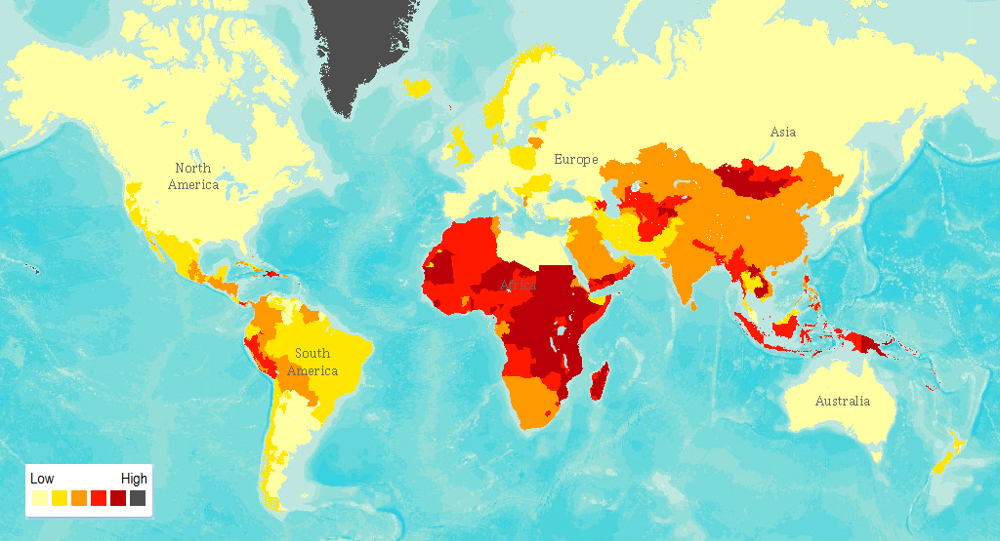

Water Scarcity
Nearly half the global population are already living in potential water scarce areas at least one month per
year
and this could increase to some 4.8–5.7 billion in 2050. About 73% of the affected people live in Asia (69%
by 2050) (Burek et al., 2016).
Water scarcity explanation according to UN Water:
"Water scarcity can mean scarcity in availability due to physical shortage, or scarcity in access due to the
failure of institutions to ensure a regular supply or due to a lack of adequate infrastructure".
How to contribute in global water crisis campaign?
- Change your diet, lifestyles and consumption pattern. Reduce your meat consumption.
- Reduce, Reuse, and Recycle your water.
- Support new water conservation technologies.
- Start planting trees in your surroundings.
- Participate in water crisis campaign. Get to know more about our campaign here